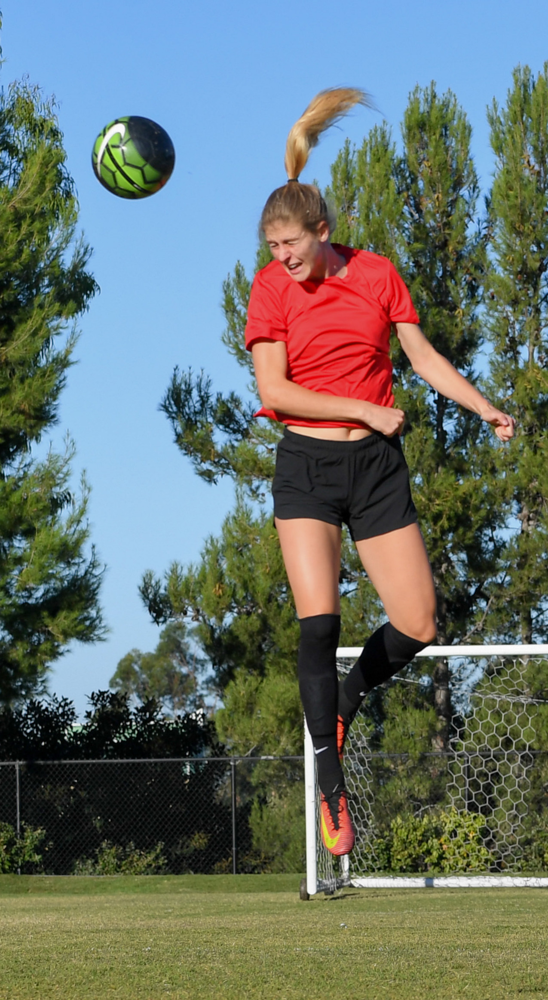
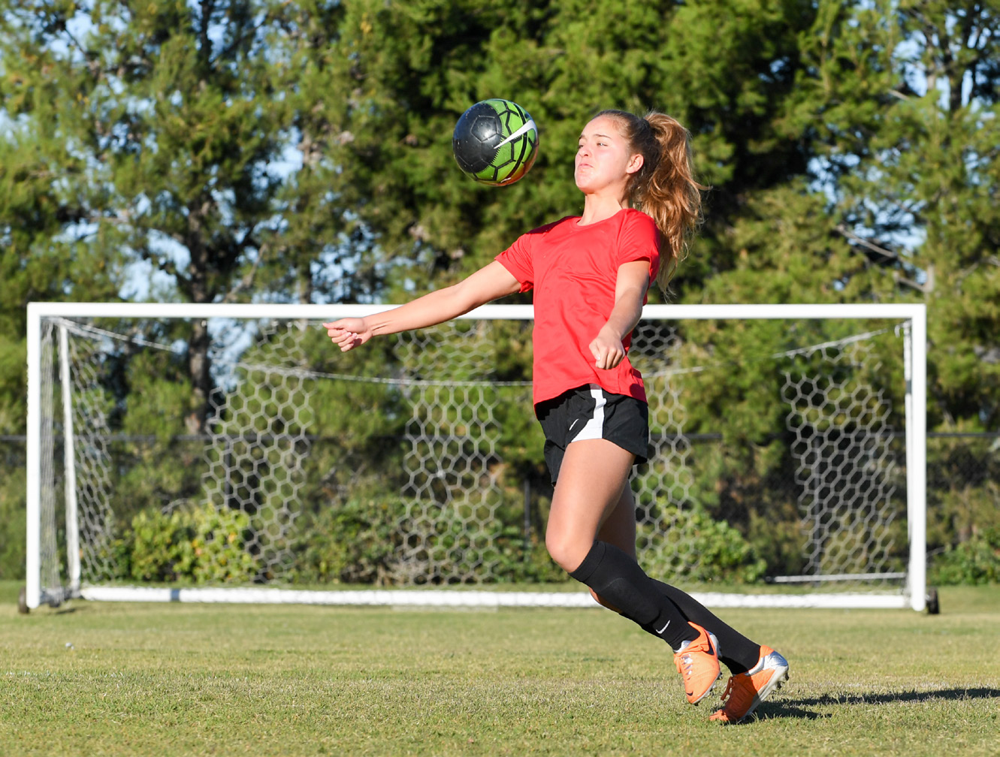
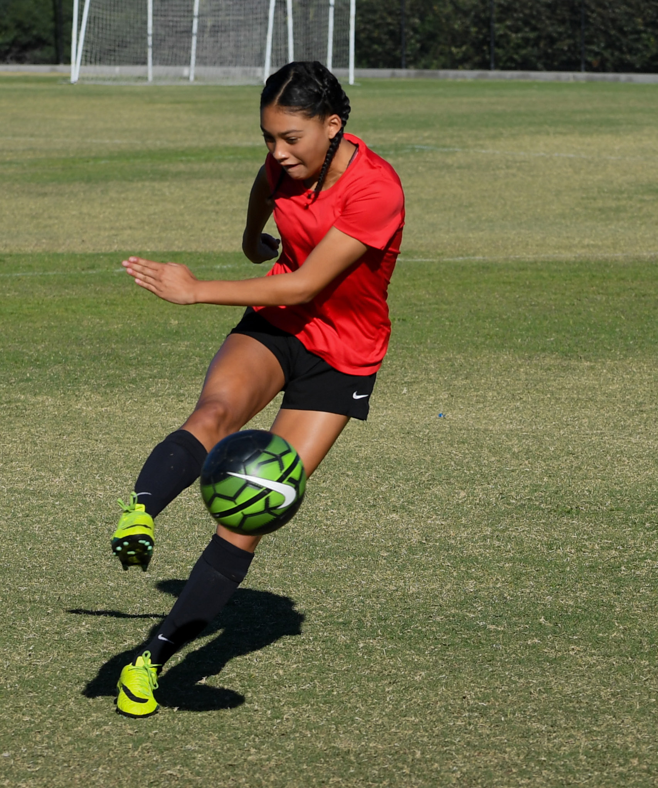
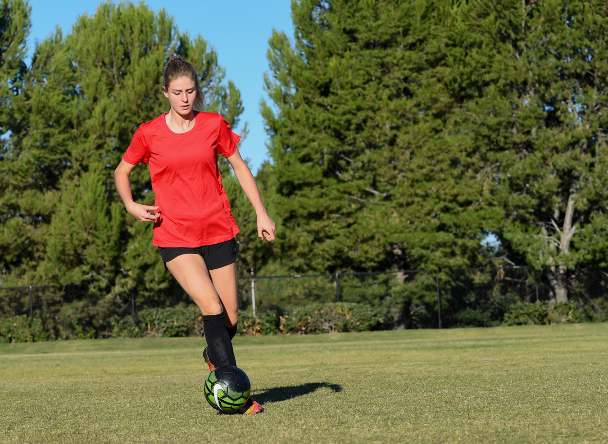
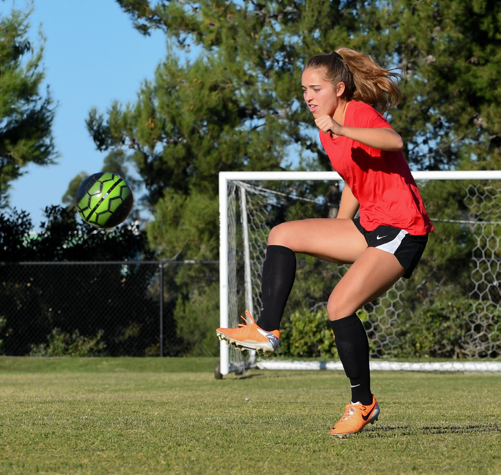
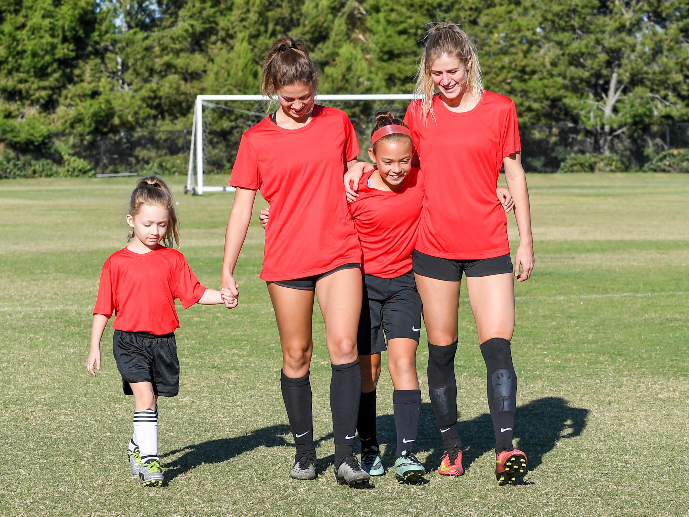

In Level 5
a soccer player has reached the highest level of her career: She is now a professional athlete. You
have made it to the top; now how to do stay there? Maintaining good fitness and nutrition habits
will help extend your playing years, but truly great players aren’t just stars in the game; they are
representatives of their teams, their families, and their beliefs. Learn how to be a good role model
as you express yourself on social media, in public and in the press, and as you interact with
fans.

A positive attitude is essential to any athlete’s success both on and off
the playing field. A Level 5 COMPLETE ATHLETE makes a habit of
demonstrating the following five attributes:
Respect
As a Level 5 COMPLETE ATHLETE, you must continue to demonstrate respect for
your coaches and game officials, your teammates and opponents, as well as yourself. As a professional
soccer player, you should also demonstrate respect for the fans who come to see you and your team play.
If someone asks for your autograph, be gracious and friendly. Remember, without the fans, you might not
have a team to play on.
ATHLETES >> At the pro level right now, you’re going to start
having fans follow you on Twitter, Facebook, and Instagram—and come to your games. You’ve got to show a
lot of respect for those fans.
At the Super Cup in Sweden, you can see the players hugging fans afterward and just spending a great deal
of time with them following the game. It is so moving to see little girls absolutely glowing as they get
autographs from their favorite heroines. As a coach, it makes you proud to see your players making such
a connection with the fans and as a fan; that moment of genuine engagement can mean so, so much.
Don’t ever take your fans for granted and don’t ever think you are above meeting them, snapping photos,
or shaking hands. Your supporters are a huge part of who you are as a player.
ATHLETES >> When Christen Press got drafted in the first round and
had to share the front position with Abby Wambach, we talked about how important it was for her to give
respect to the senior players who have paid their dues. The reason why she’s playing at the level
she is, is because these players paved the way for her. It is tremendously important when a
rookie comes into a team that she gives the respect to the veteran players because of their experience
and the ways that they can guide younger players on and off the field. It could be the turning point in
a player growing as an athlete by being willing to be mentored. –Ziad
Sportsmanship
Good Sportsmanship starts with respect for one’s teammates, opponents,
coaches, and officials. A Level 5 COMPLETE ATHLETE demonstrates good
sportsmanship by:
- Playing by the rules and never cheating
- Acknowledging and encouraging her teammates
- Accepting responsibility for her own mistakes
- Never arguing with the officials
- Winning and losing with grace
As a professional soccer player, you must always remember that you are not the only player on the team.
Even if you’re a star player, you can’t win a game all by yourself. Demonstrate good sportsmanship by
giving credit to your teammates and your coaches when you win a game. You should also acknowledge that
the other team was a formidable opponent.
ATHLETES >> One of the best examples of sportsman-ship at the
professional level was the Women’s World Cup final between Japan and the United States. It was supposed
to be a great matchup, but the game was over by halftime with a score of 4-1. What was so amazing,
though, was that the Japanese team never argued with the referees or with one another. They
stayed respectful and they continued to encourage one another as a team. After the game, they shook
hands and didn’t act angry. They were being watched by their country and by the whole world, and they
absolutely shone in terms of what real sportsmanship looks like. They were an example for every team,
every player, and every coach to learn from. It was amazing to watch. –Walid and Ziad
Teamwork
A soccer player who reaches the professional ranks will likely join a team that is already a tight-knit
family. She is going to need to earn the trust of her new teammates and maintain that trust using the
skills she has learned up to this point.
Professionalism
As a Level 5 COMPLETE ATHLETE, a soccer player simply needs to be the professional that she is being paid to be by representing her team and her
sport admirably. In addition to the list of do’s and don’ts presented in Level 4, a professional athlete
must learn how to speak to the media correctly and in a way that presents her team in a good light.
ATHLETES >> At this level, every player has to understand that it’s
not about the name on the back of the jersey; it’s about the name on the front of the jersey. Whenever
you’re doing an interview or doing any charity work or involved in community activities, you’ve got to
always remember that you’re representing a club, you’re representing your whole roster of that year,
you’re representing the tradition that club set up in that community, and it’s not about you. It’s about
the team.
It’s really important for the players to control their emotions, especially during an interview after a
heart-breaking loss. Know that there are thousands, if not tens or hundreds of thousands, of people
watching that interview. They are waiting for you to see what you are going to say. Are you going to
blame a teammate for costing you the game, or are you going to do just the opposite? Are you going to
say, “We gave it everything and today just wasn’t our day,” or are you going to start pointing fingers?
Remember that every single thing you say or do at that level is representing your team, your traditions,
and your community. –Ziad
Leadership
Whether or not a student-athlete moves into professional level play, the leadership skills she has developed over the years will continue to benefit
her as she leaves college. In corporate America, as on a soccer team, a strong, confident leader can
inspire a team to accomplish goals that they can’t accomplish on their own. This is one of the many
reasons why many companies hire former athletes.
A former player may consider coaching, moving up from introductory levels to higher Levels of coaching.
According to the U.S. Bureau of Labor Statistics, employment of coaches is expected to increase much
faster than the average for all occupations through 2022. Nonetheless, there will be a lot of
competition for college and professional coaching jobs.
The athlete who has developed strong leadership skills over the years will be a much more attractive
candidate, because she will already possess the following:
- Excellent communication skills that allow her to effectively teach and convey information to her
team
- The ability to make quick decisions, especially during games and other high pressure situations
- Effective interpersonal skills that allow her to relate to her players
- Negotiation skills that allow her to solve problems in the best interest of everyone involved
ATHLETES >> When you’re in that little tunnel with the opposing
team lining up next to you, and the referees are right in front of you, and you are waiting for them to
give you the green light to step on the field because the TV is going to start, and it’s
going to be live feeding, and this is when the TV had the cameras on the team in that tunnel … imagine
that you are standing right across from your opponent and channel that energy into your mind, your body,
your eyes, and your voice.
Recently, just before a big Premier League game between Arsenal and Lester on television, there were
cameras on both teams and about 80,000 fans in attendance waiting for the teams to step onto the field.
All the players were trying to look sharp in front of the camera and put a smile on their faces, but
when that green light was given for both teams to walk on the field, Arsenal captain’s whole demeanor
changed. In an instant it went from, “Yeah, we have a big game right now, lads,” to, “Come on, men,
we’re going to war and we are representing all of our fans today.” It was an amazing moment to witness
the leader forget about everything going on around him and shift his mind to a place where he knew he
had to get his players in that state of mind. –Walid and Ziad
Camille Levin >> I ended up going to Europe when I
first entered the pros—a lot of Americans do. I was drafted by a Swedish team, and I was fortunate
because a lot of Swedes speak English very well, so it wasn’t too big of an adjustment. But it can be
kind of overwhelming at first to be living in a new country and not speaking the language, trying to
learn a new culture, understanding how people work there, and how things work there in general. At the
end of the day, though, I was there for soccer, so when you’re on the field, it doesn’t matter where you
are or where you came from. There are different play styles and different approaches, but we
were all there to play soccer. When I was on the field, I was confident in what I was doing and I was in
my happy place. Wherever you are, at the end of the day, you’re on a soccer field with a ball and your
team. It doesn’t matter what language they’re speaking or what culture differences there are—ultimately,
you’re all there for the same reason. That is a pretty neat thing about the sport and how universal it
is.


Preparation refers to off-the-field activities, such as practicing skills,
eating right, staying hydrated, getting enough rest, and mentally preparing for a game or practice. A
COMPLETE ATHLETE prepares to perform on the field of play by continuously
improving on the following:
Lower Body STRENGTH
At Level 5, as a professional, you are at the top of your game physically; you are stronger, more
explosive, healthier, and better balanced than ever before. You are staying fit during crucial
practices, getting more reps because of it, and seeing the difference on the pitch. If you keep your
fitness and health during practice and games, it may be the difference to making a higher salary or
being chosen to play for a national team. Stronger legs have made you faster to the point of contact,
and you are now out-jumping your opponent for free balls in the air or winning slide tackles. Single-leg
squats are easier, your balance is top-notch, and your jumping is exceptionally high. Congrats you are
ready for Level 5 testing and dominating any challenge!
Upper body strength
You may now be playing against players 5-10 years older than you. You may be just as skilled, but are you
just as strong? National coaches will be looking at you to separate yourself from competition, so the
margin for error is minuscule. At this level, decisions may come down to matchups with other teams just
as skilled, so skill may not be what is most important at some positions. You don’t want to be on the
bench due to your lack of strength!
Core Strength
You are in the best shape of your life, playing against some of the most elite players in the world, and
every athlete is out to either beat you or take your job—so staying healthy can be as important as
scoring a goal. This is where having a strong core can be crucial for a soccer player. You need your
hips to be strong to deliver accurate, crisp passes, and your lower back needs to be able to support all
the torque that comes with kicking a ball powerfully. A weakness in your core simply means you are
likely going to be injured sooner rather than later.
Level 5 FITNESS TEST
Lower Body Strength >>
- Perform 10 full-range single-leg squats on both L/R legs
- Hold a single-leg wall squat for at least 85 seconds
- Broad jump distance of 92 inches or greater
- Vertical jump distance of 22 inches or greater
Upper Body Strength >>
- Bent-arm, hold pull-up for 30 seconds
- Perform 45 push-ups in 60 seconds
Flexibility/Mobility >>
- Sit-and-reach test minimum of 43 centimeters
- 90/90 test is pass or fail
Core Strength/Balance >>
- Hold plank for 3 minutes
- Side plank L/R, 60 seconds each
- Perform a hip-lift march with perfect form 3 minutes
- Balance on one leg for 60 seconds
- Standing medicine ball throw 6 pound ball and minimum distance of at least 8 yards
Speed/Quickness/Endurance >>
- 5-10-5 Shuttle Run in 4.7 seconds
- 30-yard sprint in 4.5 seconds
- Beep Test score 8/6-10/1 or better
Level 5 is the highest level of technical ability, and reaching this Level of soccer requires the ability
to perform on the highest stage. Playing at the professional/international level will consist of many
challen-ges and sacrifices. At this level, you are constantly under the microscope, with the pressure on
to perform on the biggest stage, and it is one that few get to experience. Remember, being a COMPLETE ATHLETE, it is up to you to continue to master the four previous
Levels in order to play the game of soccer at this Level. Understanding the tactical roles and
responsibilities with players that can interchange within systems, will test your technical ability to
the highest level.
Playing at the professional/international level is the greatest honor in the game of soccer. Using these
technical tools and developing them to perform consistently in this environment is the final challenge
on your journey to being a COMPLETE ATHLETE:
Foundational Ball Skills/Dribbling
- Consistent dribbling habits on both feet to keep all abilities sharp and consistent
- The ability to read opponents’ weaknesses to use your moves effectively
- Being able to perform creative skill, speed, and change of pace with both feet, and to play either
side of the field or central
- Deception to freeze opponents with upper and lower body
- Understanding to read teammates’ movements, in order to penetrate your opponents’ open areas
Passing
- The ability to weight balls to play to feet or lead away from pressure with both feet accurately in
all areas of the field
- Driving balls with range of 50 yards plus with both feet
- Bending the ball with appropriate weight and accuracy for service or to switch the field with both
feet
- Chipping weighted balls in by reading the opponents’ shape and timing of teammates’ runs
- Outside of the foot in tight areas to show quality and vision to break through opponents
- Deceptive Cryuff, heel and flick passes to play through tight gaps to penetrate
Ball Control
- To use all surfaces of the feet and body from all distances on the field
- To receive the ball at the highest level of speed with the inside or outside of both feet away from
pressure
- The ability to turn with physical pressure with either foot inside or outside to beat opponent
- The ability to control the ball out of the air at full speed from 50 yards plus with both feet,
either thigh, or on the chest
- Receiving to turn with the ball with physical pressure out of the air or off the bounce
Ball Striking/Shooting
- Reading the positioning of the goalkeeper for finishing with instep to drive inside and outside of
the box with either foot
- Inside of the foot finishing with both feet
- Reading the positioning of the goalkeeper to bend the ball with either foot to finish
- Chipping the goalkeeper with either foot when high off line or out of position
- Inside of the foot volleys with both feet from wide service or knockdowns
- Outside of the foot to beat goalkeeper when sliding in the opposite direction
- Juggle or flick-up touch to set up volley, or timing of full scissor kick, or over-the-head kick
when the ball arrives into your body in the right way to connect on goal
Heading
- For distance, to pass or clear over the opponents midfield
- To flick with timing of teammates’ run
- To clear high and wide to stop pressure
- Deceptive movement and timing to step in front or behind to lose opponent to then snap flick across
the goalkeeper to finish or head down either side of the goalkeeper to finish
- Diving header waist-height ball at speed to clear the ball, or arrive in the area at full speed to
get on the end of wide service to finish

For student-athletes who become one of the rare few who move on to the professional level in their sport,
life can sometimes feel like an open book. More people are watching them play, and they are more in the
public eye than ever before. A Level 5 COMPLETE ATHLETE is one who
continues to successfully balance all the elements in her life, including:
Family
As a professional athlete, you should continue to strive to maintain positive relationships with your
family members by:
- Setting aside a specific day and time each week to talk to your family by phone
- Communicating regularly via e-mail or text messaging
- Attending special family events whenever possible
- Reassuring your family that they are still an important part of your life
- Remembering that you’re in the public eye, and always strive to make your family proud
ATHLETES >> Whenever we do a Q&A with profession-al athletes
for our younger players, one of the most common questions we hear is, “What do you do when you have a
bad game? How do you react?”
The common denominator for the majority of the pros is that they make a separation between the game and
their lives. After a game, they go home and spend time with their husband or boyfriend or parents or
siblings—whatever their family situation is, they spend time with those people they love the most to
help detach emotionally from the game.
As we tell them, there is nothing we can do to change the outcome now except to look forward to
practicing and fixing whatever didn’t go right. But they have to have that positive retreat from the
pressure of the sport; don’t bring the negative vibe of feeling like a failure or that you let people
down into your family space. Just knowing that until it’s time to get back on the practice field, now is
the time to enjoy the company of family goes a long way in helping a professional play soccer at the
highest level for a long time.
Academics
As a Level 5 COMPLETE ATHLETE, you should have earned your degree at
college. As a professional athlete, you should take advantage of continuing education opportunities. For
example, some sports organizations provide signing bonuses that include money just for school. Even if
you’re not provided with education money, you should strive to expand your mind in new and different
ways.
For example, business classes can help you later in life when you retire from sports. Taking classes just
for fun, such as a foreign language class or an art class, can provide an opportunity to develop
creative skills. Yoga classes can help you reduce stress and even improve your performance on the field
of play.
ATHLETES >> The women’s professional league draft is in December,
so we have a lot of players who opt out of school in December to get drafted—which means they don’t
finish their last semester of school. What many of them end up doing is to get drafted, play their
season, but then come back to finish their last semester during the off-season.
That is so important because, at the end of the day, they have invested so much time in school and they
are so close to finishing that it would be a waste not to. Even if they get drafted, they can still go
back and finish the degree, and we always encourage them to do so. Otherwise, what do you do if your
career is cut short due to injury or simply when you choose to retire? You’ve got to have that degree
for thinking about transitioning to life outside of soccer. –Walid and Ziad
Social Life
As a Level 5 COMPLETE ATHLETE, you should continue to maintain a supportive
social life. Make time for your friends when you can, and always strive to be a true friend. At the same
time, be careful who you associate with, because you will be judged by the company you keep.
ATHLETES >> One time, we were running a camp with Paul Burns, who
back then was the assistant coach for Newcastle United in England, in the Premier League. He said, “What
other element do you add to the most important elements that make a soccer player? What makes a soccer
player is their technical ability, tactical ability, psychological and physical ability, but in the
Premier League, one of the most important things that we look for is your lifestyle.”
When players begin signing contracts and making money, they often don’t know what to do with the sudden
fame and fortune, and their entire lifestyle changes. Their social life becomes all about going out,
partying, having a good time—and then they end up coming to games unprepared. It affects the way they
play, as well as their mental game.
Who you choose to hang around with and how you choose to spend your time makes even more difference now
than it did when you were in school, because now you don’t have your parents to hold you accountable or
the fear of losing a scholarship to help you make good choices. Pick the right friends, surround
yourself with the right people, pay attention to the older players who have learned how to find the
balance, and that will be the key to being truly successful.
Role Model
These days, everyone has a cell phone with a camera. For a professional athlete—or anyone in the public
eye—one mistake can be broadcast internationally in a matter of moments. Remember that young people are
looking up to you. Be a good role model citizen by behaving well and by engaging in charity work and
community service.
Kassi McCluskie >> Now that my profession is as a
coach, I appreciate even more how important it is to have good role models in women’s sports. Mentoring
is so important for both the older and younger players with whom I work. As a coach, I love having a Big
Sister/Little Sister pairing with the teams in our club so that players at lower Levels are matched with
players at the higher Levels. The girls are encouraged to go to one another’s games to cheer each other
on, or to make encouragement cards and signs before big games. Unfortunately, I still don’t think there
are enough female role models out there in the world of sports, so it is really fantastic for younger
girls to have older girls they can watch and learn from in a personal, one-on-one manner. In the same
way, it is a wonderful leadership learning opportunity for older players to interact with the younger
girls and think carefully not only about how to cheer for them and work on skills, but also about how
they talk and act. I think it is a positive experience for everyone.
